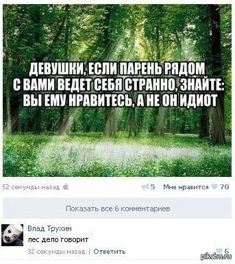

࿕ ☭
- notice,
that hitler’s swastika was rotated 45 degrees. And it was
rotated counter-solar, because it’s how it goes. It makes more sense if it's ribbons on a
cross, so when you rotate it they make the circle.
But it would be too much to wait from unicode. I wish I could
draw my own glyphs for and in the document. And if you think I
say commies are a lucky ideology, you’re wrong again, fuck
them big time, no matter what magic trick they implement on
us, luck will not help them, because truth is what matters the
most, and truth is not in their bs. But I shouldn't be too
harsh on them, because russians did to conquered nations not
sweeter things than commies did to us. but
let's keep on wandering through this tabooed and yet vague
theme.
And here I notice that both ? and ʔ are
lucky. and though swash on most letters is this way, f & s
are counter-clockwise. f&s as in fascists? NaZi are both
luckily turned. Was they smeared as fascist, even though they
were nazi? natie is nation in
netherlands and it sounds as nazi. probably same is true for
german, but I still don't know german. Is it because
they were influenced and allied with italian fascists. Though
what difference do these differences in naming does, if they
were all the same? Even commies were not much different, and
even more vicious towards the occupied population. Very epic
villain as koschey bessmertny. and one
of the founding fathers of вкп(б) was богданов, who
experimented with blood to become immortal, and blood is the
ancient key to immortality, and it could be the reason of
many wars, where young blood can be sucked with no count.
Infusion of young plasma is the key to immortality, drinking
could be valid too. And though this knowledge can launch
prices to this service to the sky, soon we'll not need it at
all, for genetic therapies will make our blood young
forever. Or maybe even artificial embryonic conditions with
magic stretchings will be enough, but this is even less
certain, for nobody seems to work in this direction, so I
will have to build this experiment by myself. I think
they (russian governments were looking for national idea in
our fairytails and saw that in the beginning Koschey governs,
Ivans only supercede them. But in the very beginning there's
three headed snake (russians have three crowns on their
emblem, as if the central hat gives invisibility. Or was that
head cut off by our tzar before he nailed it to his shield.
Shield had to be of the size of the beast, so it saw itself in
the polished metal and attacked himself, while somebody from
its back cut the beast with a sword. but back to the nazis:
Look at all these jilted boys. All
prepared for death. I’m pretty sure they’re the very same 100
thousands workers hired by nazi government to build autobahnen.
Whoever made them put unlucky swastika on those who oppose
«them», had a wicked sense of humour, but very powerful, very
powerful sense of humour, one of those things which let them
live. and klezmer too, and you may call me degenerate, but I
even find that director’s face rather nice.
Don’t these swastikas also look like 666? My
How none of these northern youth see that these swastikas can be
read as bindrunes? sиx sиx sиx or sx sx
sx or ss ss ss. S = C = 3? then G = 6, because it makes
proto-alphabet 3 forms (3 fates, 3 mothers, see further) to 3
forms of vowel, a i u (3rd person, 1st person, 2nd person – so
I should have stand first? No, for some reason they avoided
putting 123 in this order. Even abc seems to be 132, because
even though in runes B & D seem like 2 & 1, when
combined to “zero” of vowel, they rearanged and Ϩ looks like
2, and 3 looks like B. and in sanskrit they go like this:
first go set of vowels, then 4 dice of linguals (each die has
one empty slot – like dominos have) then goes a die of labials
and 9 additional letters (if they were used as numerals or not
I don’t know, but they could.)
Don’t these swastikas look like 666? Then the opposite spell
would be 777. if 666 is carbon, 777 is nitrogen, Lavoisier
called it azote (literally “no life”) and russians call it like
this, азот. Russians were the 777, I wanted to say, but I
couldn’t find 3 hammer and sickle signs around that parade, what
I found instead is this replay of that parade, and these three
stars stand for 15 instead of 18, devil of tarot, not the
lucifer of new testament:
And while I was looking, I
saw that there used to be hammers & sickles on kremlin
stars when Leni shot that masquerade:
But when they went to war, it’s believed to be ruby stars without hammers & sickles so it was not 666 against 777, but 666 against 555. or was it 5555? I think they added the fourth star. There were four stars, they added fifth. Is it some wicked pocker? What could that jocker be?
Who could be the players?
oh coy what are you doing, why are you doing it – mostly it does me, I cought, got by this idea, and thus I manifest it in this world, but I’m an ultra-liberal wing of ultra-nationalists, I want it all to be alright.
Making some moves with my arms, I noticed that one arm goes
sunwards, the other one - counter-sunwards - so is it the reason
they call those swasticas right and left. If you roll your arms
like this, they are the same moves in relation to the axis of
the body. And if you move left fist counter-clockwise, you move
it to the left, and the right hand hits to it's right - it could
be useful in sabre fight - probably those who twist those knives
know this rule, though I yet have to check it.
And the image 卍卐 looks like an image of a man or an eagle or two
brothers fighting back to back. When 卐卍 looks like two rivals,
because right swastika is on the left and left swastika is on
the right, thus they're halves of different men. Not only in
sabre fight, but in rawing the boat it's important to know these
directions. as in rowing a boat. Though it's weird to row
backwards, it was determined by the muscles of our backs.
Swimming is magic of a kind. Was crawl
invented to reverse rotations? (as
if just to see if it's possible)
Расколдовывай! Коляда, хоровод, крути так чтоб размоталось, ослабляй, освобождай, или наоборот потянуть чтобы растянулось? чередовать нужно скручивания вправо и влево или их цель растяжение, а не бултыхать, но скрутиться можно только в одну сторону. в какую же? naturally I began rotating clockwise with my arms if I look at the cealing, and surprisingly my legs went rotating clockwise when I looked down. So it's going upwards. And this is exactly the direction those sufi dance.

Bless removes curse, and people say "god bless" when you sneeze. They could have been saying this to avoid plague. when somebody sneezes you know it can be contagious. Why is he here? Why don't I sit at home instead of doing all this social crap? It doesn't make you rich either most of the time. But we went offrail, back on track. Godbless could be a form of word Goddess. Goddess was what public heard. It still has this female suffix, or is it suffix less. less of b? less of bad? избави нас (от лукавого т.е. как от луки, указание автора заклинания? или лукавый это диавол, как христиане это понимают? see, I'm not against christianity, I'm a christian myself in quite a few ways, and first volume of this book ends with 666 just as the last volume of that had. and I quote the first book of that book directly, and all that was unintentional. I just recalled it. And that could be both "god in the sky" and god in my culture, I read those books, so they could get installed on my psyche. psyence sounds like science but begins as pseude, which can be tnothing of course)
In soviet russia we have a tradition of saying "будь здоров" (be healthy) when someone sneezes for the first time, "расти большой" (grow big) when someone sneezes for the second time, "не будь лапшой" (don't be noodles) when someone sneezes for the third time. this probably relates to snot, though I just figured it out, nobody here doesn't now why we say that other that лапшой rhymes with большой on the fourth and further you'd have to improvise.
Yet I don't know if it was this way before commies, it quite could be "господи благослови!" before russian civil war (in which jews won) – this phrase "gospodi blagoslovi!" is directly translated as "god bless!" and some people noticed that those english words look liek shortened russians: g-d is god and russian gospod, and bles could be a shorter form of blagos. Благой Господь, Blessed G-d. does ss go as г? boss бог the first example I got. (бог (bog) is god, where did brits got their meaning to that word who knows. it breathes, it eats)
if bless and blagos are indeed related, I'd suppose there a ה. bely ה ? bella dieu? beautiful woman, what men naturaly deify. what those christcucks burnt on sticks. Some women are witches, some of them are, and it's too much trouble trying to cure them with love, so people cured them with fire, and you know beautiful women are more likely to be raped and surviving these experiences getting more vicious. It could be quite a releaving experience, so this is how it is in the world, it made them cynicist, bitchy. uglier. угли. which fits this poem atm, but first I related ugly to углы (angles) both rhymes may be wrong ofc.
Sneeze!
sneeze a healing sneeze
snooze a healing snooze
upd:
one benevolent witch taught me that swastikas are not lucky and unlucky, but male and female, I guess it's all yin-yang thing, and though sun goes sunwards, she told me to look at ursa m??or.
And she's right, northern sun is on the south and goes rightwards, which is explicitly clockwise when it's high in the sky, while the northern sky itself rotates counter-clockwise. I suppose sun is the man, while sky is shy, she, the one which embraces him in der himmel.


The End of the secret level... not